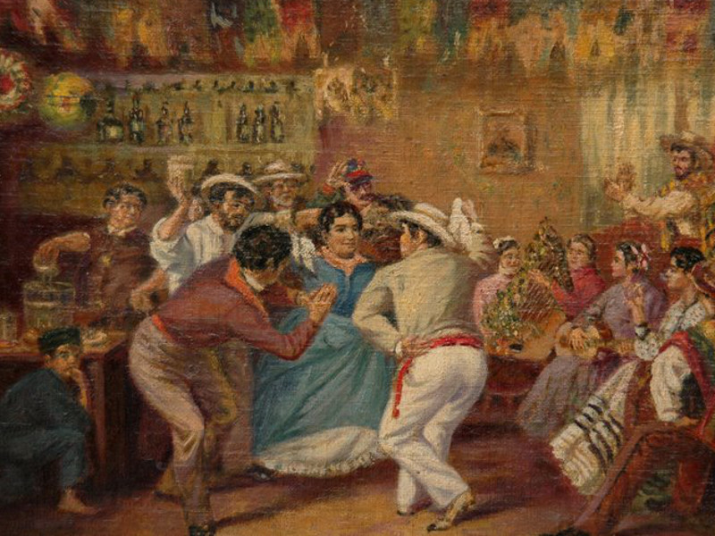
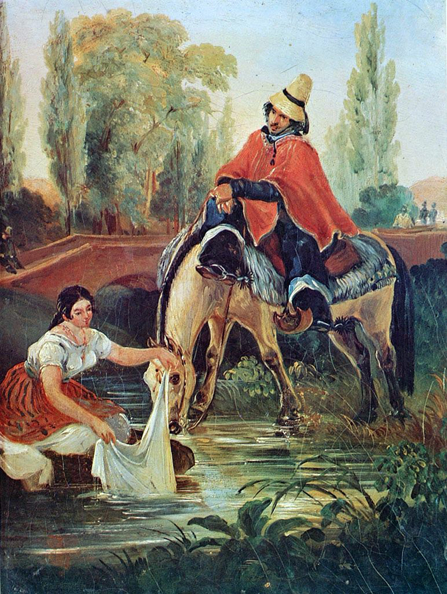
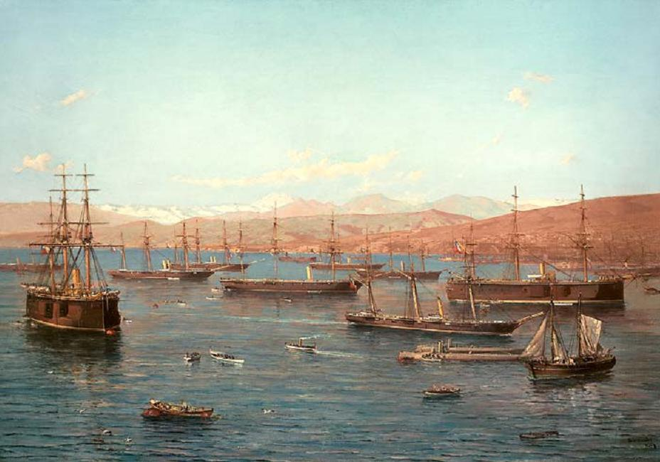
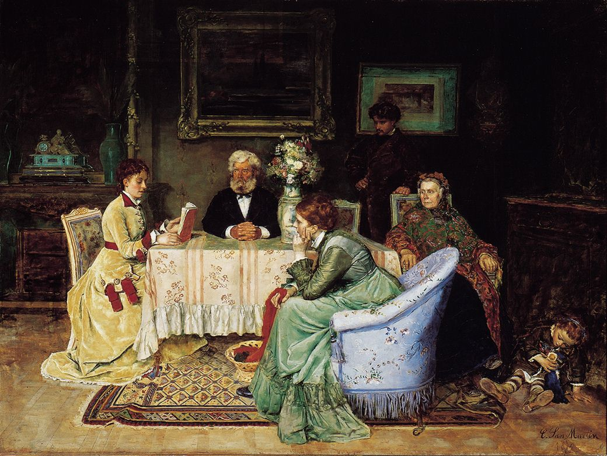
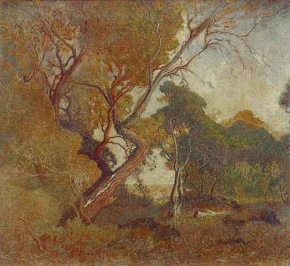
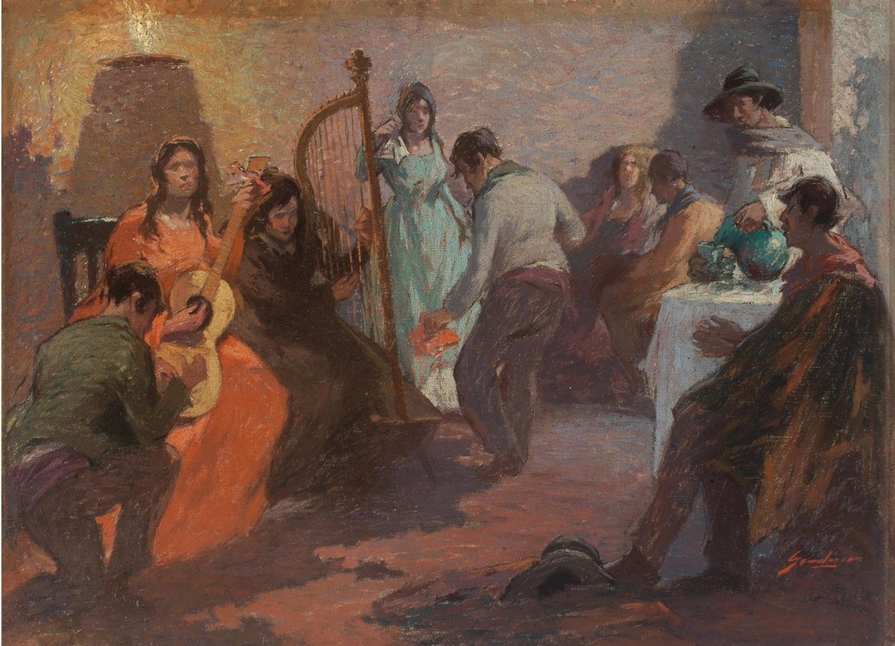
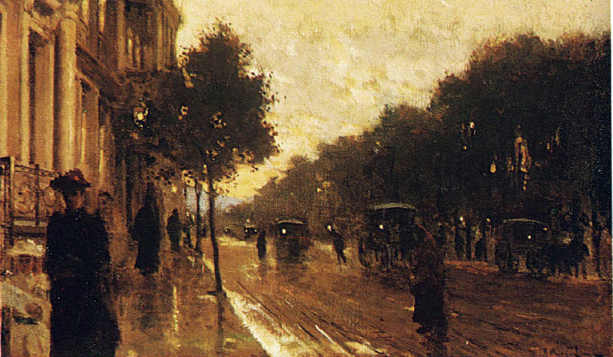
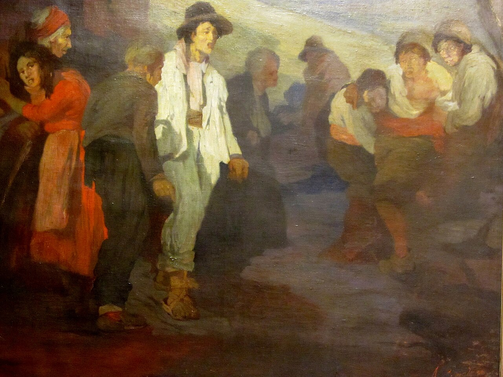

La colección
Dieciocho pinturas chilenas de 1835 a 1930, en cuatro salas: la bahía, las costumbres, las figuras y la naturaleza. Haz clic en una obra para verla en grande.
Obras de la colección

















¿Te interesa una obra? Pregunta por su disponibilidad y precio con IVA incluido.